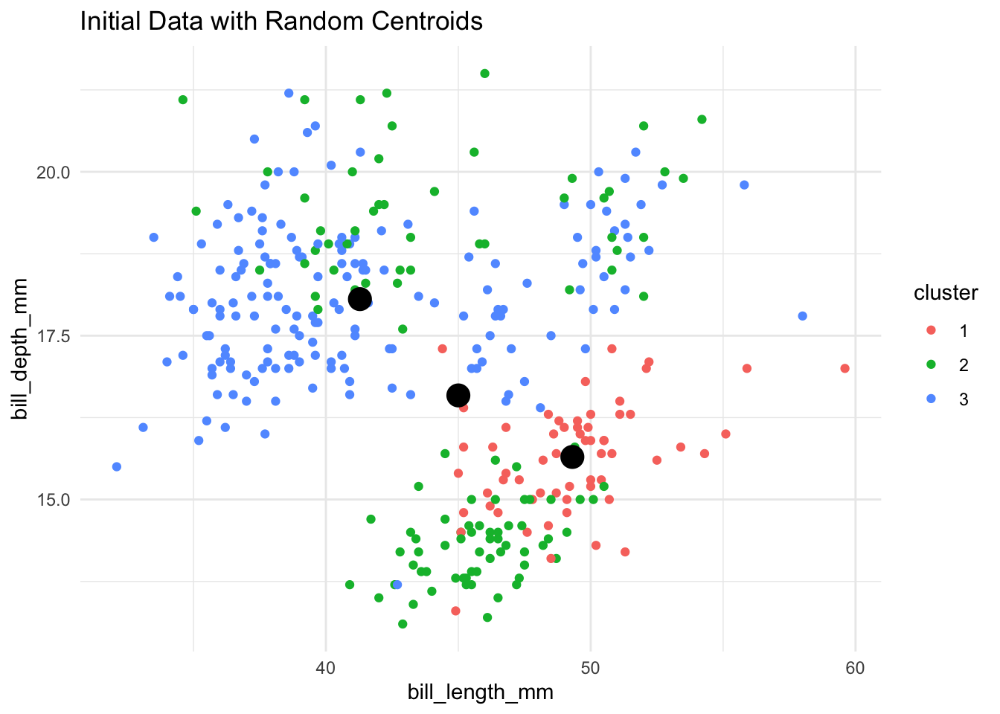
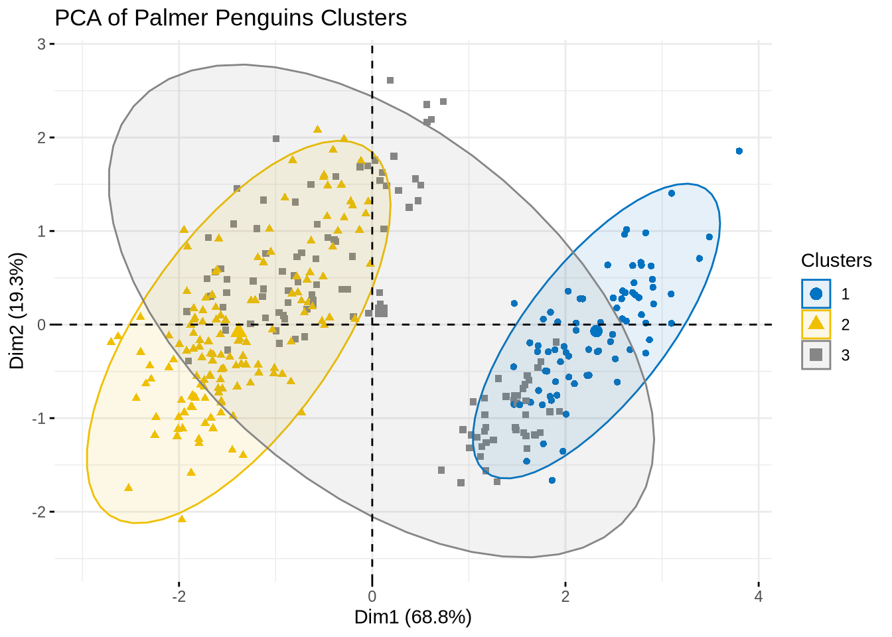
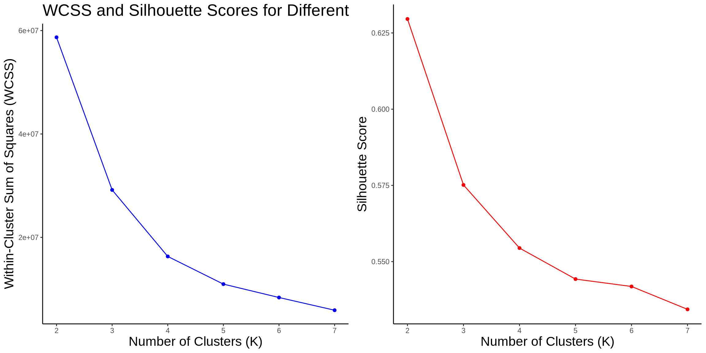

library(palmerpenguins)
library(tidyverse)
library(cluster)
library(gridExtra)
library(grid)
library(GGally)
library(FactoMineR)
library(factoextra)Segmentation Methods
Let’s ask CoPilot: What is segmentation, and k-means clustering? and why is it important to marketing analytics?
Segmentation is the process of dividing a market into distinct groups of consumers who have similar needs, preferences, or behaviors. By segmenting the market, companies can better understand their customers and tailor their marketing strategies to meet the specific needs of each segment. This allows companies to target their marketing efforts more effectively and efficiently, leading to increased customer satisfaction and loyalty.
k-means clustering is a popular method used in segmentation analysis to group similar data points into clusters based on their attributes. The algorithm works by iteratively assigning data points to the nearest centroid and updating the centroids based on the mean of the data points in each cluster. This process continues until the centroids no longer change significantly, resulting in well-defined clusters.
Why is segmentation important to marketing analytics? Segmentation allows companies to identify and target specific customer segments with tailored marketing messages and offers. By understanding the unique needs and preferences of each segment, companies can create more personalized marketing campaigns that resonate with their target audience. This leads to higher conversion rates, increased customer engagement, and improved overall marketing performance.
K-Means
Now then, I will develop custom code to implement the k-means clustering algorithm, allowing visualization of the algorithm’s iterative process through plots at each significant step. This will include visualizing the initial random centroid placement, subsequent updates of centroids, and cluster assignment changes. After implementing the algorithm, I will apply it to the PalmerPenguins dataset as a test case.
To validate the effectiveness and accuracy of the custom implementation, I will compare its clustering results with those obtained from the built-in kmeans function available in R. This comparison will highlight the performance and potential differences in the clustering outcomes between the custom and built-in methods.
Data
palmerpenguins::penguins %>%
head(10) %>%
knitr::kable()| species | island | bill_length_mm | bill_depth_mm | flipper_length_mm | body_mass_g | sex | year |
|---|---|---|---|---|---|---|---|
| Adelie | Torgersen | 39.1 | 18.7 | 181 | 3750 | male | 2007 |
| Adelie | Torgersen | 39.5 | 17.4 | 186 | 3800 | female | 2007 |
| Adelie | Torgersen | 40.3 | 18.0 | 195 | 3250 | female | 2007 |
| Adelie | Torgersen | NA | NA | NA | NA | NA | 2007 |
| Adelie | Torgersen | 36.7 | 19.3 | 193 | 3450 | female | 2007 |
| Adelie | Torgersen | 39.3 | 20.6 | 190 | 3650 | male | 2007 |
| Adelie | Torgersen | 38.9 | 17.8 | 181 | 3625 | female | 2007 |
| Adelie | Torgersen | 39.2 | 19.6 | 195 | 4675 | male | 2007 |
| Adelie | Torgersen | 34.1 | 18.1 | 193 | 3475 | NA | 2007 |
| Adelie | Torgersen | 42.0 | 20.2 | 190 | 4250 | NA | 2007 |
I will take out the non-numeric columns, so that we can apply k-means clustering to the dataset.
# Load the dataset and select only numeric columns
data <- palmerpenguins::penguins %>%
select_if(is.numeric) %>%
na.omit()
data %>%
head(10) %>%
knitr::kable()| bill_length_mm | bill_depth_mm | flipper_length_mm | body_mass_g | year |
|---|---|---|---|---|
| 39.1 | 18.7 | 181 | 3750 | 2007 |
| 39.5 | 17.4 | 186 | 3800 | 2007 |
| 40.3 | 18.0 | 195 | 3250 | 2007 |
| 36.7 | 19.3 | 193 | 3450 | 2007 |
| 39.3 | 20.6 | 190 | 3650 | 2007 |
| 38.9 | 17.8 | 181 | 3625 | 2007 |
| 39.2 | 19.6 | 195 | 4675 | 2007 |
| 34.1 | 18.1 | 193 | 3475 | 2007 |
| 42.0 | 20.2 | 190 | 4250 | 2007 |
| 37.8 | 17.1 | 186 | 3300 | 2007 |
What is K-means clustering?
- Imagine you have a box of colorful candies, and you want to group them into different piles based on their colors. K-means clustering is a way to do that grouping automatically.
- It’s an unsupervised machine learning algorithm that tries to find groups in the data based on their similarity. The “K” in K-means refers to the number of groups you want to find in the data. The algorithm works by iteratively assigning data points to the nearest cluster centroid and updating the centroids based on the mean of the data points in each cluster. This process continues until the centroids no longer change significantly, resulting in well-defined clusters.
Custom K-Means Implementation (I will try my best to explain the code below.)
# Function to implement k-means
# Starting the function
kmeans_custom <- function(data, k, max_iter = 100) {
# We start by creating a function called kmeans_custom.
# data is a list of candies with different features (like size, color).
# k is the number of groups (or piles) we want to make.
# max_iter is the maximum number of times we will try to make the groups better.
# Getting ready
n <- nrow(data)
p <- ncol(data)
centers <- data[sample(1:n, k), ]
clusters <- rep(0, n)
# n is the number of candies.
# p is the number of features of each candy (like size, color).
# centers are the starting points for our piles. We pick k random candies to start with.
# clusters is a list that will keep track of which pile each candy belongs to.
# Grouping Candies
for (iter in 1:max_iter) {
for (i in 1:n) {
distances <- apply(centers, 1, function(center) sum((data[i, ] - center)^2))
clusters[i] <- which.min(distances)
}
# We loop max_iter times to try to make the piles better.
# For each candy, we calculate how "far" it is from each pile's center. The distance is like how different the candy is from the pile's typical candy.
# We put the candy in the pile with the smallest distance (the most similar pile).
# Updating Pile Centers
new_centers <- matrix(NA, ncol = p, nrow = k)
for (j in 1:k) {
new_centers[j, ] <- colMeans(data[clusters == j, , drop=FALSE])
}
# We create a new list for the centers of the piles.
# For each pile, we find the average of all the candies in that pile. This average becomes the new center of the pile.
# Checking for Changes
if (all(centers == new_centers, na.rm = TRUE)) break
centers <- new_centers
}
# If the centers don't change anymore, we stop because the piles are as good as they will get.
# If the centers do change, we update the centers and try again.
# Finishing Up:
list(centers = as.data.frame(centers), clusters = clusters)
}
# We return the final centers of the piles and the list of which pile each candy belongs to.Visualization of K-Means Algorithm
# Set parameters
k <- 3
result <- kmeans_custom(data, k)- Here, k is set to 3, meaning we want to divide the data into 3 clusters.
- This function we just created will perform the K-Means clustering and return the centers of the clusters and the cluster assignments for each data point.
# Rename columns of the centers to match the original data
colnames(result$centers) <- colnames(data)
# Add the cluster results to the data
data$cluster <- factor(result$clusters)
data %>%
head(10) %>%
knitr::kable()| bill_length_mm | bill_depth_mm | flipper_length_mm | body_mass_g | year | cluster |
|---|---|---|---|---|---|
| 39.1 | 18.7 | 181 | 3750 | 2007 | 2 |
| 39.5 | 17.4 | 186 | 3800 | 2007 | 2 |
| 40.3 | 18.0 | 195 | 3250 | 2007 | 2 |
| 36.7 | 19.3 | 193 | 3450 | 2007 | 2 |
| 39.3 | 20.6 | 190 | 3650 | 2007 | 2 |
| 38.9 | 17.8 | 181 | 3625 | 2007 | 2 |
| 39.2 | 19.6 | 195 | 4675 | 2007 | 3 |
| 34.1 | 18.1 | 193 | 3475 | 2007 | 2 |
| 42.0 | 20.2 | 190 | 4250 | 2007 | 3 |
| 37.8 | 17.1 | 186 | 3300 | 2007 | 2 |
The data table shows the first 10 rows of the Palmer Penguins dataset with cluster assignments after applying a custom K-Means clustering algorithm.
Columns
- bill_length_mm: The length of the penguin’s bill in millimeters.
- bill_depth_mm: The depth (or height) of the penguin’s bill in millimeters.
- flipper_length_mm: The length of the penguin’s flipper in millimeters.
- body_mass_g: The mass of the penguin in grams.
- year: The year the data was collected.
- cluster: The cluster assignment for each penguin, indicating which group the K-Means algorithm assigned it to.
Each penguin is assigned to one of three clusters (1, 2, or 3), based on similarities in their physical measurements (bill length, bill depth, flipper length, and body mass).
Now it will be benefitial to have a visual representation of the clusters. We can use a pair plot to visualize the relationships between the variables and how they are grouped by cluster.
ggpairs(data, columns = 1:4, aes(color = cluster, alpha = 0.7)) +
theme(
axis.title.x = element_text(size = 14),
axis.title.y = element_text(size = 14),
plot.title = element_text(size = 20, hjust = 0.5)
) +
labs(title = "Pair Plot of Palmer Penguins Clusters",
x = "Feature Value",
y = "Density") 
Interpretation of the Pair Plot
- The pair plot provides a visual representation of the relationships between different pairs of features in the Palmer Penguins dataset, along with the clusters identified by the custom K-Means algorithm. Here’s a detailed interpretation of the plot:
General Observations:
- Clusters:
- The plot shows three clusters, represented by different colors (red, green, and blue).
- Each cluster groups penguins with similar physical characteristics.
- Density Plots:
- The diagonal elements of the plot are density plots for each feature.
- These show the distribution of each feature (e.g., bill length, bill depth, flipper length, and body mass) within each cluster.
- Scatter Plots:
- The off-diagonal elements are scatter plots showing pairwise relationships between features.
- These plots help in understanding how different features relate to each other and how the clusters are distributed across these relationships.
Detailed Feature Relationships:
Bill Length vs. Bill Depth:
- The scatter plot shows that Cluster 3 (blue) generally has shorter bill lengths and depths compared to the other clusters.
- Cluster 1 (red) has a wider range of bill lengths and depths, while Cluster 2 (green) has bill lengths and depths that are in between Clusters 1 and 3.
Bill Length vs. Flipper Length:
- The scatter plot indicates that Cluster 3 (blue) has shorter bill lengths and longer flipper lengths.
- Cluster 1 (red) shows a more even spread across different bill and flipper lengths.
- Cluster 2 (green) has bill lengths and flipper lengths that are intermediate.
Bill Length vs. Body Mass:
- Cluster 3 (blue) has shorter bill lengths and generally higher body mass.
- Cluster 1 (red) has a wider range of both bill lengths and body mass.
- Cluster 2 (green) falls in between, with moderate bill lengths and body mass.
Bill Depth vs. Flipper Length:
- Cluster 3 (blue) has a moderate range of bill depths but longer flipper lengths.
- Cluster 1 (red) has a broad range of bill depths and flipper lengths.
- Cluster 2 (green) shows a narrower range of bill depths but still has considerable variation in flipper lengths.
Bill Depth vs. Body Mass:
- Cluster 3 (blue) shows a moderate bill depth but higher body mass.
- Cluster 1 (red) again shows a broad range, indicating more diversity in this cluster.
- Cluster 2 (green) has a narrower range of bill depths and body mass.
Flipper Length vs. Body Mass:
- Cluster 3 (blue) has longer flipper lengths and higher body mass.
- Cluster 1 (red) shows considerable variation across both flipper length and body mass.
- Cluster 2 (green) falls in between the other two clusters with moderate values.
Correlation Coefficients:
- Corr values in the upper triangular section show the correlation coefficients between pairs of features.
- For example, the correlation between bill length and flipper length is 0.656, indicating a positive relationship.
Summary:
- Cluster 1 (Red): Shows a high degree of variability in all features, indicating a diverse group of penguins.
- Cluster 2 (Green): Generally has moderate values for all features, falling in between the other two clusters.
- Cluster 3 (Blue): Has shorter bill lengths but longer flipper lengths and higher body mass, making it a distinct group.
Overall, the pair plot provides a comprehensive view of the relationships between different features and how they are grouped by cluster. This visualization helps in understanding the characteristics of each cluster and how the K-Means algorithm has divided the penguins based on their physical measurements.
What is PCA?
- PCA (Principal Component Analysis) is a dimensionality reduction technique that is commonly used in data analysis to identify patterns and relationships in high-dimensional data.
Why is it benefitial to use PCA before clustering?
- Because it reduces the dimensionality of the data by transforming the original features into a new set of uncorrelated variables called principal components. This transformation helps to capture the most important information in the data while removing noise and redundancy. By reducing the number of dimensions, PCA simplifies the data and makes it easier to visualize and interpret. This can improve the performance of clustering algorithms by reducing the computational complexity and enhancing the clustering results. Additionally, PCA can help to identify the most relevant features that contribute to the clustering process, leading to more accurate and meaningful cluster assignments.
# Perform PCA
pca_result <- PCA(data[, 1:4], graph = FALSE)
# Ensure PCA and clustering results are combined correctly
pca_data <- data.frame(pca_result$ind$coord)
pca_data$cluster <- data$cluster
# Plot PCA results
fviz_pca_ind(pca_result,
geom.ind = "point",
col.ind = pca_data$cluster,
palette = "jco",
addEllipses = TRUE,
legend.title = "Clusters") +
ggtitle("PCA of Palmer Penguins Clusters")
Interpretation of the PCA Plot
- The PCA (Principal Component Analysis) plot provides a visual representation of the Palmer Penguins dataset in a reduced two-dimensional space, with clusters identified by the custom K-Means algorithm. Here’s a detailed interpretation of the plot:
Axes:
- Dim1 (68.8%): The first principal component, which explains 68.8% of the variance in the data.
- Dim2 (19.3%): The second principal component, which explains 19.3% of the variance in the data.
- Together, these two dimensions explain 88.1% of the variance in the data, making them a good summary of the dataset.
Clusters:
The plot shows three clusters, represented by different colors and shapes:
- Cluster 1 (Blue, Circles)
- Cluster 2 (Orange, Triangles)
- Cluster 3 (Gray, Squares)
Ellipses:
- The ellipses around each cluster represent the 95% confidence interval for the cluster’s data points. This gives a sense of the spread and concentration of each cluster.
Principal Components:
- Dim1 is the most significant in explaining the variance in the dataset and is the primary axis along which the clusters are separated.
Confidence Intervals:
- The ellipses provide a visual indication of the spread and overlap of the clusters. The ellipses for each cluster do not overlap significantly, indicating clear separation between the clusters.
- The 95% confidence intervals indicate that while there is clear separation between the clusters, there is also some overlap between them. This suggests that there may be some ambiguity in the classification of certain data points. However, the clusters are generally well-defined and distinct.
- This PCA plot effectively reduces the multidimensional penguin data into two dimensions, highlighting the key features that separate the clusters and providing a clear visual of the distinct groups within the dataset. This visualization can help in understanding the relationships between the clusters and the underlying structure of the data.
Now we will compare the performance of my k-means clustering code with that of the built-in R function.
# Run custom K-Means
result_custom <- kmeans_custom(data, k)
result_custom$centers
V1 V2 V3 V4 V5
1 44.26923 17.38718 201.8034 4314.744 2007.991
2 48.61111 15.40123 219.9506 5359.877 2008.148
3 41.00208 17.94375 189.4861 3458.507 2007.993
$clusters
[1] 3 3 3 3 3 3 1 3 1 3 3 3 3 1 3 3 1 3 1 3 3 3 1 3 3 3 3 3 1 3 1 3 1 3 1 1 3
[38] 3 1 3 1 3 1 3 1 3 3 3 1 3 1 3 1 3 3 3 3 3 3 3 1 3 1 3 1 3 1 3 1 3 1 3 1 3
[75] 1 3 1 3 1 3 1 3 1 3 3 3 3 1 3 3 1 3 1 3 1 3 1 3 1 3 1 3 1 3 3 3 1 3 1 3 1
[112] 3 1 1 1 3 3 3 3 3 3 3 3 3 1 3 1 3 1 3 3 3 1 3 1 3 1 3 1 3 3 3 3 3 3 1 3 3
[149] 3 3 1 1 2 1 2 2 1 1 2 1 2 1 2 1 2 1 2 1 2 1 2 2 2 1 2 2 2 1 2 1 2 2 1 2 2
[186] 2 2 2 2 1 2 1 2 1 1 2 2 1 2 2 2 2 2 1 2 2 2 1 2 1 2 1 2 1 2 1 2 1 2 1 2 1
[223] 2 2 2 1 2 1 2 1 2 1 2 1 2 1 2 1 2 2 2 2 2 1 2 2 2 2 2 1 2 2 2 2 2 1 2 1 2
[260] 1 2 2 2 1 2 1 2 2 2 2 2 2 2 2 3 1 3 3 3 1 3 3 1 3 3 3 3 1 3 1 3 3 3 1 3 3
[297] 3 3 3 1 3 3 3 1 3 1 3 1 3 1 3 1 3 1 1 3 3 3 3 1 3 1 3 3 3 1 3 1 3 3 3 1 3
[334] 3 1 3 3 1 3 3 1 3# Run built-in K-Means
result_builtin <- kmeans(data, centers = k, nstart = 25)
result_builtinK-means clustering with 3 clusters of sizes 70, 165, 107
Cluster means:
bill_length_mm bill_depth_mm flipper_length_mm body_mass_g year
1 48.93571 15.53143 220.6143 5435.357 2008.057
2 41.17758 18.03273 189.9515 3518.182 2007.982
3 44.87383 16.85140 204.9346 4448.832 2008.084
Clustering vector:
[1] 2 2 2 2 2 2 3 2 3 2 2 2 2 3 2 2 3 2 3 2 2 2 2 2 2 2 2 2 2 2 2 2 2 2 3 2 2
[38] 2 3 2 2 2 3 2 3 2 2 2 3 2 3 2 3 2 2 2 2 2 2 2 3 2 3 2 2 2 3 2 3 2 2 2 3 2
[75] 3 2 2 2 3 2 3 2 3 2 2 2 2 2 2 2 3 2 3 2 3 2 3 2 3 2 3 2 3 2 2 2 2 2 3 2 3
[112] 2 3 2 3 2 2 2 2 2 2 2 2 2 3 2 3 2 3 2 2 2 3 2 2 2 2 2 3 2 2 2 2 2 2 3 2 2
[149] 2 2 3 3 1 3 1 1 3 3 1 3 1 3 1 3 1 3 1 3 1 3 1 1 1 3 1 1 1 3 1 3 1 1 3 1 1
[186] 1 1 1 1 3 1 2 1 3 3 1 3 3 1 1 1 3 1 3 1 3 1 3 1 3 1 3 1 3 1 3 1 3 1 3 1 3
[223] 1 1 1 3 1 3 1 3 1 3 1 3 1 3 1 3 1 3 1 1 1 3 1 3 1 3 3 3 1 3 1 1 1 3 1 3 1
[260] 3 1 1 1 3 1 3 1 3 1 3 3 1 1 1 2 2 2 2 2 2 2 2 3 2 2 2 2 3 2 3 2 2 2 3 2 2
[297] 2 2 2 3 2 2 2 3 2 3 2 3 2 2 2 3 2 3 2 2 2 2 2 3 2 3 2 2 2 2 2 3 2 2 2 3 2
[334] 2 2 2 2 3 2 2 3 2
Within cluster sum of squares by cluster:
[1] 7011276 14090122 8077152
(between_SS / total_SS = 86.7 %)
Available components:
[1] "cluster" "centers" "totss" "withinss" "tot.withinss"
[6] "betweenss" "size" "iter" "ifault" # Compare Within-Cluster Sum of Squares (WCSS)
wcss_custom <- sum(apply(data, 1, function(x) min(apply(result_custom$centers, 1, function(center) sum((x - center)^2)))))
wcss_builtin <- result_builtin$tot.withinss
# Print WCSS for comparison
cat("WCSS (Custom K-Means):", wcss_custom, "\n")WCSS (Custom K-Means): 29652522 cat("WCSS (Built-in K-Means):", wcss_builtin, "\n")WCSS (Built-in K-Means): 29178551 Both the custom K-Means function and the built-in R kmeans function perform similarly in clustering the Palmer Penguins dataset. The cluster centers and the WCSS values are close, indicating that both methods effectively identify similar groupings in the data. However, the built-in function performs slightly better in terms of WCSS, however, the difference is not significant. This suggests that the custom K-Means implementation is effective in clustering the penguin data and provides comparable results to the built-in function.
Now we will evaluate the performance of the K-Means algorithm by calculating the Silhouette Score for different values of K. The Silhouette Score is a measure of how similar an object is to its own cluster compared to other clusters. A higher Silhouette Score indicates better clustering results. We will calculate the Silhouette Score for K = 2 to 7 and visualize the results to determine the optimal number of clusters for the Palmer Penguins dataset.
# Function to calculate WCSS
calculate_wcss <- function(data, k) {
kmeans_result <- kmeans(data, centers = k, nstart = 25)
return(kmeans_result$tot.withinss)
}
# Function to calculate Silhouette Score
calculate_silhouette <- function(data, k) {
kmeans_result <- kmeans(data, centers = k, nstart = 25)
silhouette_score <- silhouette(kmeans_result$cluster, dist(data))
return(mean(silhouette_score[, 3]))
}
# Calculate WCSS and Silhouette Scores for K = 2 to 7
wcss_values <- numeric()
silhouette_scores <- numeric()
for (k in 2:7) {
wcss_values[k - 1] <- calculate_wcss(data, k)
silhouette_scores[k - 1] <- calculate_silhouette(data, k)
}# Create a data frame for plotting
results <- data.frame(
K = 2:7,
WCSS = wcss_values,
Silhouette = silhouette_scores
)
results K WCSS Silhouette
1 2 58697149 0.6295757
2 3 29178551 0.5751470
3 4 16316566 0.5544542
4 5 10963000 0.5442764
5 6 8371448 0.5418473
6 7 5913684 0.5343481p1 <- ggplot(results, aes(x = K, y = WCSS)) +
geom_line(color = "blue") +
geom_point(color = "blue") +
ggtitle("WCSS and Silhouette Scores for Different Numbers of Clusters") +
xlab("Number of Clusters (K)") +
ylab("Within-Cluster Sum of Squares (WCSS)") +
theme_classic() +
theme(plot.title = element_text(size = 20),
axis.title.x = element_text(size = 16),
axis.title.y = element_text(size = 16))
p2 <- ggplot(results, aes(x = K, y = Silhouette)) +
geom_line(color = "red") +
geom_point(color = "red") +
xlab("Number of Clusters (K)") +
ylab("Silhouette Score") +
theme_classic() +
theme(plot.title = element_text(size = 20),
axis.title.x = element_text(size = 16),
axis.title.y = element_text(size = 16))
grid.arrange(p1, p2, ncol = 2)
The plots show the Within-Cluster Sum of Squares (WCSS) and Silhouette Scores for different numbers of clusters (K) in the K-Means algorithm.
WCSS Plot:
- The “elbow point” in the plot is around K = 3, where the rate of decrease in WCSS starts to slow down significantly. This suggests that K = 3 may be a good choice for the number of clusters.
Silhouette Score Plot:
- The Silhouette Score is a measure of how similar an object is to its own cluster compared to other clusters. A higher Silhouette Score indicates better clustering results.
- The Silhouette Score decreases as the number of clusters (K) increases, which is expected as more clusters can lead to smaller, more isolated clusters.
- The highest Silhouette Score is observed for K = 2, indicating that a lower number of clusters may provide better clustering results based on this metric.
- However, the Silhouette Scores for K = 3 and K = 4 are also relatively high, suggesting that these values of K may also be reasonable choices.